Navigace |
Ve Stromovce s GrimmouProtože je krásně a voda má ideální teplotu je čas rozšířit pole působnosti Grimmy s Nelou na venkovní prostory. Tedy konkrétně na procházky ve Stromovce, které bývají v širším kolektivu hodně "výživné". 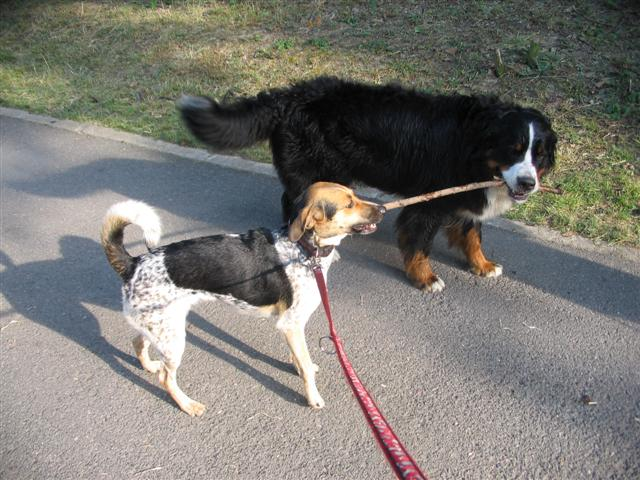 Sesterské dělení o klacek, respektive obě jsou moc paličaté na to, aby to vzdaly. Tentokrát to bude více o fotografické dokumentaci, slovní doprovod je jen okrajový. Procházky byly fajn, ale až na výjimky, které najdete popsané o něco níže, nenastaly situace, jež by zasloužily zevrubného popisu. K tomu dodávám, že nijak neželím absence dramatických historek typu Nela dobíhající koně, Nela válící se v něčem neidentifikovatelném, Nela žeroucí cosi apod. I taková relativně poklidná procházka s Nelou je docela akční a zábavná a v kombinaci s rozveselenou Grimmou jsme se nijak nenudili. 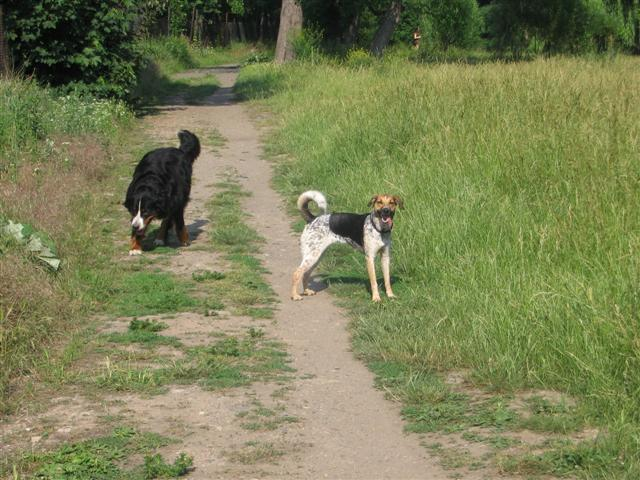 Úsměv pro fotografku.
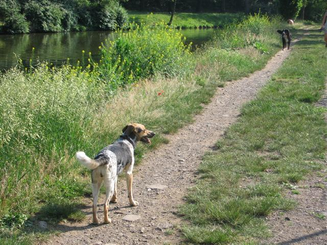 Ještě jednou na cestě. Přece jen je to méně náročné, než hopsání vysokou trávou, zvlášť ve vedru.
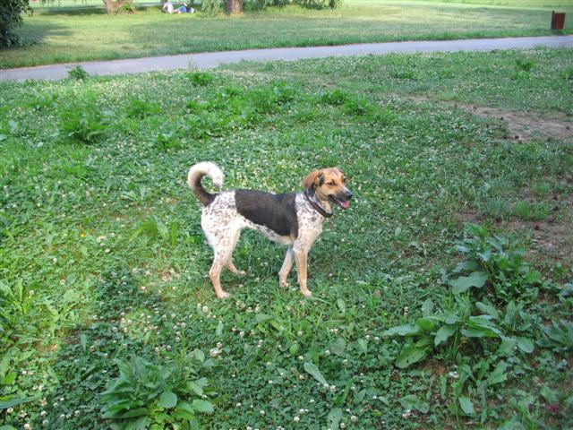 Nela tlemící se v jeteli.
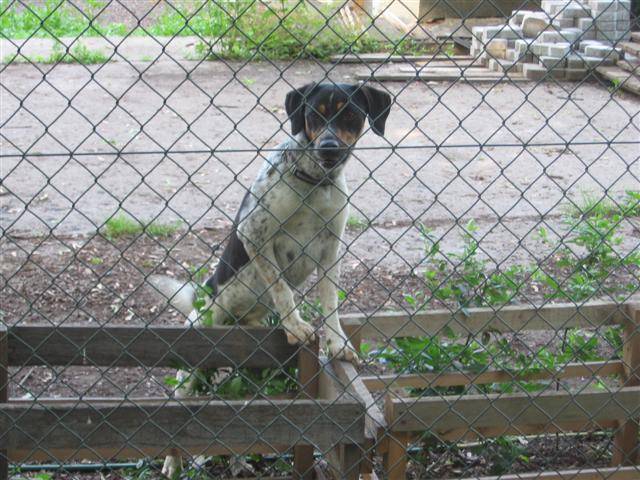 Strakáč jako hlídač u Stromovky: Ben ze Strakaté rokle za plotem.
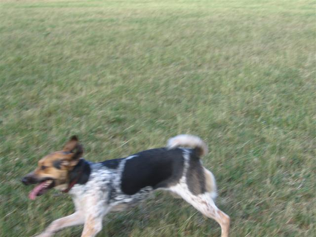 Obvyklá fotka naší Nely, jakých máme v PC uložených hromady, rozmazaná strakatá v letu.
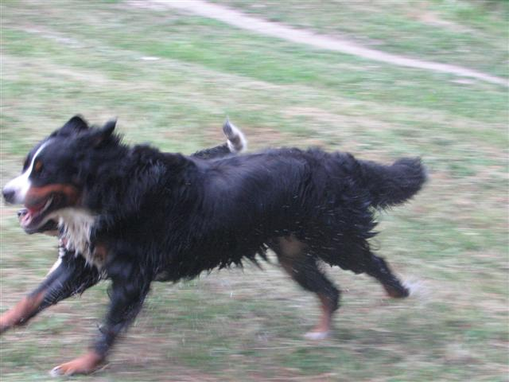 V akci - Grimma v běhu, Nela drží krok v pozadí Grimmy. Takhle si představujeme klidnou procházku...:-)
Náš první rozsáhlejší experiment ohledně chování Nely v případě, že jedeme na kole. Zúčastněné subjekty: Rudolf, kolo, Nela. Místo: Stromovka. Počasí: jasno. Závěr: pes ani člověk nezranění, bez kolize, bez ztráty psa. 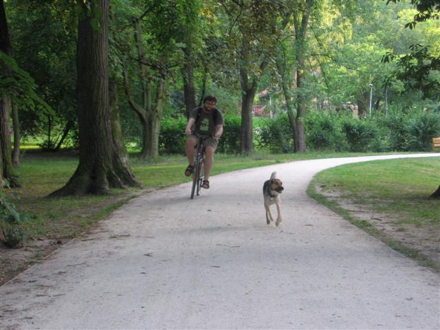 Rudolf jedoucí na kole, Nela běžící v popředí. Koupání 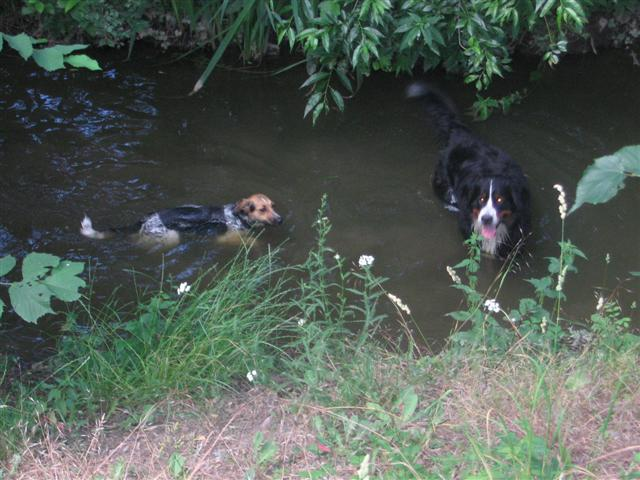 Nela je kachna a žbráchá se celoročně a ledaskde, to už víme. Ale proti Grimmě, aka bernskému bahennímu psu, je to skoro neplavec. Grimma je v tomto období ve formě, protože jezdí s páníčky na ryby, kde pilně trénuje. Nicméně stále se cítím trochu nesvá, když jdeme kolem slepého ramene Vltavy, Nela pobíhá okolo a Grimma plave souběžně s námi.
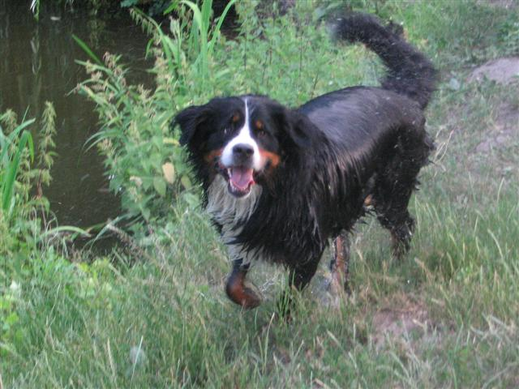 Bernský bahenní spokojený pes (přesněji fenka:-) )
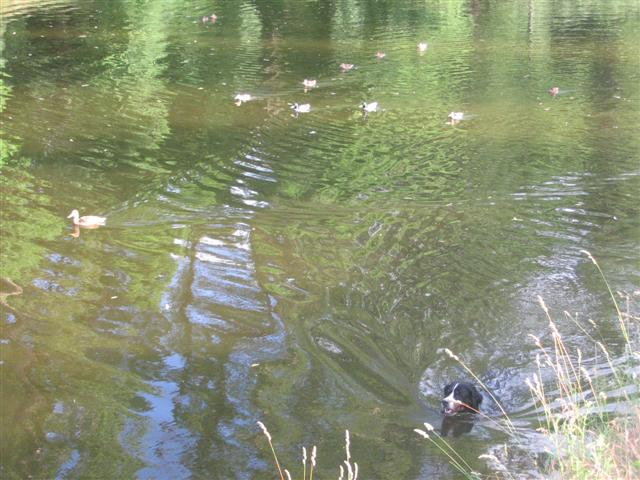 Grimma pronásledovaná flotilou kachen. Grimma vs. kachní flotila 0:1, situační popis: 1.nebezpečně blízké přiblížení Grimmy k malým kachňátkům. 2.monitoring situace a zhodnocení rizik kachnou-matkou. 3.zahájení frontálního kachního útoku na Grimmu kachní flotilou iniciované kvákáním kachny-matky. 4.pronásledování Grimmy kachní flotilou dalších cca 50 metrů. Objekt pronásledování uniká.
Srovnání bahenních psů
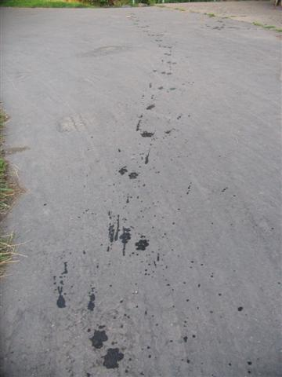 Stopy českého bahenního psa.
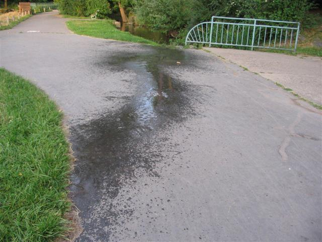 Stopy bernského bahenního psa.
|